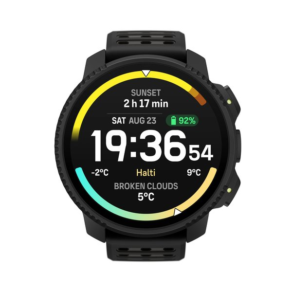
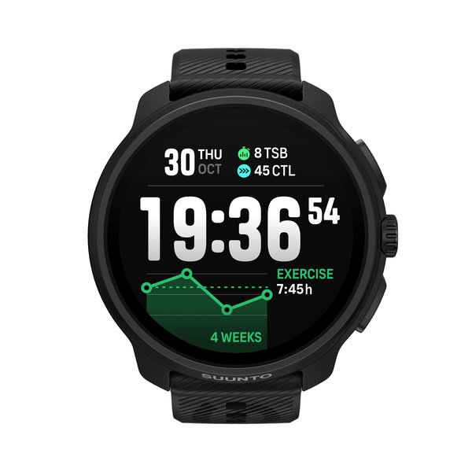
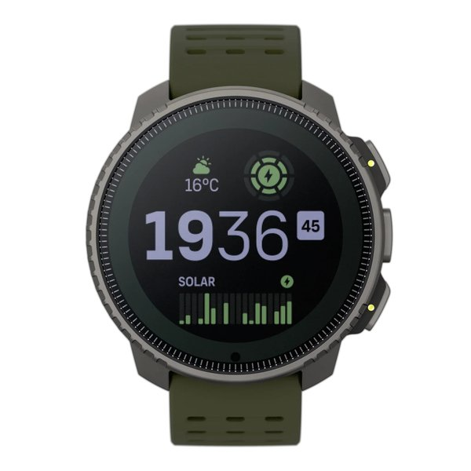
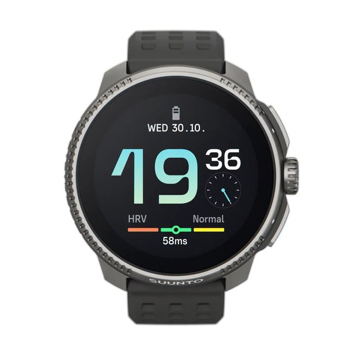
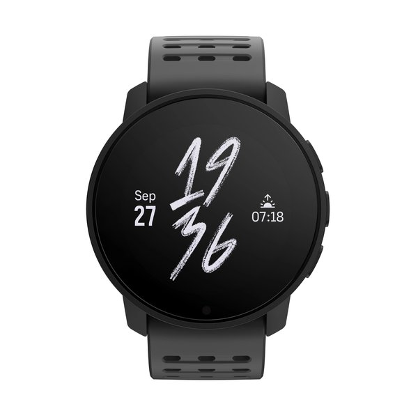
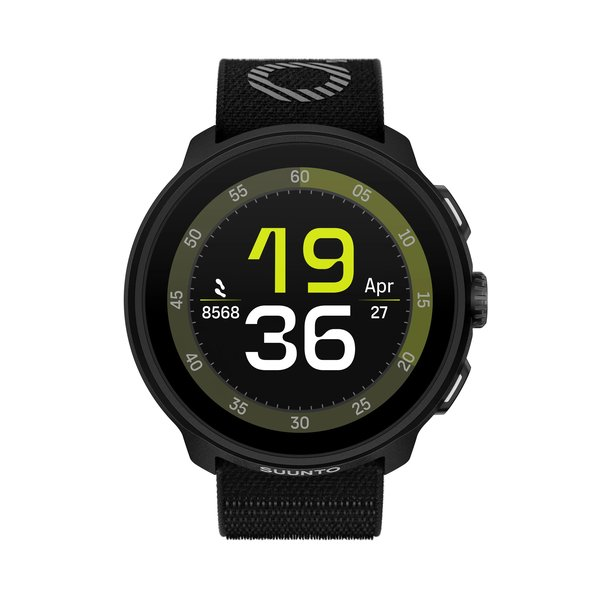
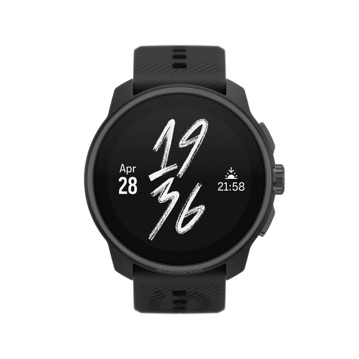
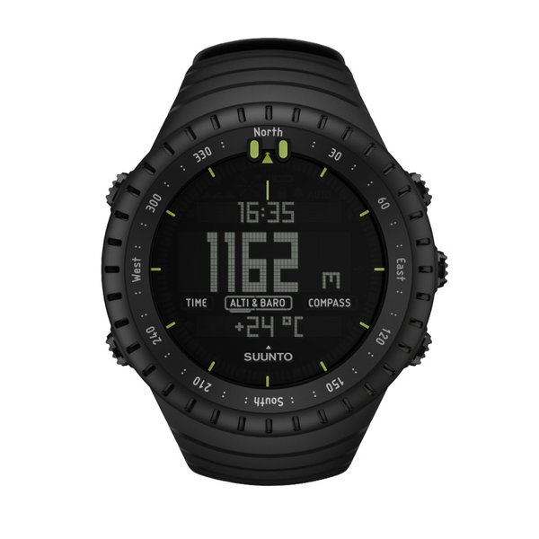
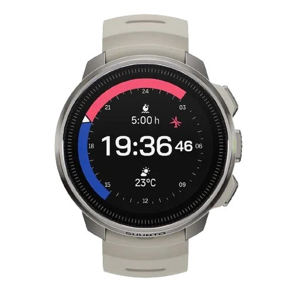

Best Suunto watch for backcountry skiing & mountaineering (2026)
 By Dex Okafor · Equipment Selection & Geometry
By Dex Okafor · Equipment Selection & Geometry
Suunto currently lists nine watches in stock on its US store, from the $149 Suunto Core ABC watch up to the $799 Suunto Ocean dive computer — and the right one for backcountry skiing and mountaineering is not the most expensive one. This guide compares all nine by battery life, weight, offline maps, dual-band GPS, and price, with picks drawn from Suunto's own spec pages and independent reviews from DC Rainmaker, OutdoorGearLab, GearJunkie, and iRunFar. Prices and promo codes below are current as of late August 2026 and fluctuate — verify at checkout.

Suunto Vertical 2 — $599
Dual-band GPS, free offline topo maps, a built-in LED flashlight, and a tested 66-hour AMOLED battery. GearJunkie validated it across splitboard uphill laps at Mt. Bachelor. The strongest all-round Suunto for human-powered mountain trips.
Check price at Suunto →Affiliate link — qualifying purchases may earn a commission. See our affiliate disclosure.
All 9 Suunto watches compared
Every model below is listed as in stock and buyable on Suunto's US watches collection as of August 2026. Battery figures are Suunto's own best-case Tour (power-saving) and Performance (multi-band) GPS numbers; daily figures are smartwatch-mode battery with 24/7 heart rate unless noted. The Suunto Core has no GPS, so its GPS-battery cells are marked n.a.
| Watch | Price (sale) | GPS battery (Tour / Perf.) | Daily | Weight | Glass / Water | Offline maps | Dual-band | Shop |
|---|---|---|---|---|---|---|---|---|
| Vertical 2 | $599 | 250 h / 65 h | 20 d | 87 g | Sapphire / 100 m | Yes | Yes | Check price → |
 Race 2 |
$499 | 200 h / 55 h | 18 d | 76 g | Sapphire / 100 m | Yes | Yes | Check price → |
 Vertical Ti Solar |
$449 (was $699) | 500 h / 85 h | 30–60 d | 74 g | Sapphire / 100 m | Yes | Yes | Check price → |
 Race Ti |
$339 (was $499) | 200 h / 50 h | 16 d | 69 g | Sapphire / 100 m | Yes | Yes | Check price → |
 9 Peak Pro |
$199 (was $249) | 300 h / 40 h | 21 d | 64 g | Sapphire / 100 m | No | No (L1) | Check price → |
 Run |
$179 (was $249) | 40 h / 20 h | 12 d | 36 g | Gorilla / 50 m | No | Yes | Check price → |
 Race S |
$279 (was $349) | 120 h / 30 h | 9 d | 60 g | Gorilla / 50 m | Yes | Yes | Check price → |
 Core (no GPS) |
$149 (was $219) | n.a. | 12 months | 64 g | Mineral / 30 m | No | No | Check price → |
 Ocean (dive) |
$799 (was $899) | 200 h / 50 h | 16 d | 99 g | Sapphire / 100 m | Yes | Yes | Check price → |
Sources: Suunto US product pages for Vertical 2, Race 2, Vertical Ti Solar, Race Ti, 9 Peak Pro, Core, Run, Race S, Ocean. Verified in-stock and buyable August 2026. Promo codes (e.g. STSALE70, STSALE250) appear intermittently at checkout — verify the current price.
Best for backcountry skiing & mountaineering
The Suunto Vertical 2 is the strongest pick for backcountry skiing and ski mountaineering. It pairs dual-band GPS (GPS, GLONASS, Galileo, QZSS, BeiDou) with free offline topo maps, a 1.5-inch 2,000-nit AMOLED display, a built-in LED flashlight, and a barometric altimeter with storm alarm — the full ABC-plus-navigation stack a tourer wants on a long day above treeline (Suunto). The defining hands-on snow evidence comes from GearJunkie, which tested the Vertical 2 across months of "running, hiking, snowboarding, and splitboarding," including uphill splitboard laps at Mt. Bachelor, where the redesigned optical heart-rate sensor "significantly improved the stability of my heart rate and blood oxygen readings while splitboarding" and "addresses the hardware needs of most mountain athletes" (GearJunkie). OutdoorGearLab measured 66 hours of real-world AMOLED battery — "the best among GPS watches we tested with AMOLED screens" — and recommends it for "endurance athletes, ultrarunners, and expedition members" in remote terrain (OutdoorGearLab).
Suunto Vertical 2 — $599
Dual-band GPS, free offline maps, LED flashlight, 66 h tested AMOLED battery, 100 m water resistance.
Check price at Suunto →For multi-day, self-supported ski trips where outlets are days away, the original Suunto Vertical Titanium Solar remains the endurance play. OutdoorGearLab calls its battery "industry-leading" in the 49 mm case, and DC Rainmaker used only 10% of the battery on an 8-hour navigated mountain hike where "the trail entirely disappeared under rock slides, spring meadows, or snow" (OutdoorGearLab, DC Rainmaker). Suunto added a ski-mountaineering mode to the Vertical by software update. Users on r/Backcountry concur: "The Suunto Vertical has been a reliable companion for my backcountry snowboarding, ultra trail running" (r/Backcountry).
Best battery life
If runtime is the deciding factor, the Vertical Titanium Solar wins outright: up to 500 hours in Tour GPS mode and 60 days of daily smartwatch use with solar charging (up to a claimed year on standby with solar, HR off) (Suunto). The Vertical 2 is the AMOLED champion at 66 h measured — "the best among GPS watches we tested with AMOLED screens" (OutdoorGearLab) — though expect closer to 45–50 hours with navigation and always-on display engaged (GearJunkie). Suunto's efficiency edge is measurable: on one 12.5-hour mountain activity the (original) Race burned 24% versus 64% on a Garmin FR965 and 90% on a Polar Vantage V3 (DC Rainmaker). At the absolute extreme, the non-GPS Suunto Core runs up to 12 months on a user-replaceable CR2032 coin cell — one tester replaced it once in three years (Suunto, Gear Assistant).
Best value
Under $250, the Suunto Run is the standout — DC Rainmaker calls its $249 list price "pretty astonishing" and "arguably one of Suunto's best-priced watches in years," and OutdoorGearLab rates it "outstanding value for athletes" (DC Rainmaker, OutdoorGearLab). It is the lightest watch here at 36 g and includes dual-band GPS, but it lacks offline topo maps and has the shortest battery (40 h Tour / 12 d daily), so it is best for single-day outings rather than multi-day tours.
Once you need real offline maps on a budget, the Suunto Race S is the move. the5krunner did "a double-take on the price, $349" and calls it "highly competitive, highly recommended" against a $449 Garmin FR265s, $599 FR965, and $750 Coros Grit X2 Pro — a rare 32 GB offline-maps watch at this price (the5krunner). DC Rainmaker's rule of thumb: "if you're looking for maps, you'll want to spend the extra $100 for the Suunto Race S" over the Run (DC Rainmaker). iRunFar found the Race S "more capable of withstanding mountain impacts" than road-oriented rivals, suited to "adventure running and general outdoor athletes" (iRunFar).
Suunto Race S — $279
Compact AMOLED, 32 GB offline maps, dual-band GPS — the cheapest Suunto with real topo maps.
Check price at Suunto →Best everyday + adventure
The Suunto Race 2 is the balance pick: a bright 1.5-inch AMOLED, accurate wrist heart rate, full offline maps, multi-day battery, and no subscription — best for a focused training-and-navigation tool including "practical backcountry exploration" (Suunto, OutdoorGearLab). DC Rainmaker found its GPS accuracy "slight steps back" versus the original Race and Vertical, even as its optical HR is a "massive improvement" (DC Rainmaker). It is the lightest Suunto with offline maps (76 g) and the fastest-charging in OutdoorGearLab's test (~68 minutes), but it omits music, payments, and calls, and its notifications are "a sore point." For multi-day expeditions, OutdoorGearLab still sends you to the Vertical 2.
The dive + outdoor pick
The Suunto Ocean is a full dive computer and sports watch in one — Bühlmann 16 GF decompression, multiple dive and freedive modes, Tank POD air integration, and 3D dive logs, plus 115+ sport modes, offline maps, ABC sensors, and dual-band GPS for the surface side (Suunto, TechRadar). It is the heaviest watch here at 99 g and dive-capped at 60 m, so buy it only if diving genuinely matters — TechRadar scored it 5/5 value as "the perfect blend of (relative) affordability, function and design," doing "the work of two separate watches" for divers who also want a land-sports watch.
The budget ABC backup
The Suunto Core is a pure altimeter-barometer-compass watch with no GPS and no charging — it runs up to 12 months on a CR2032 coin cell, making it an ideal backup or second watch for off-grid use. OutdoorGearLab calls it "the most fully featured altimeter watch we tested" with "the most accurate altimeter we tested," and it logs ski laps and true vertical gain (OutdoorGearLab, Suunto). The honest caveats: it has no GPS, the display is "a little dark," and OutdoorGearLab notes its compass "should not be a user's only compass for serious off-trail travel." At a current sale price around $149, it is a capable, always-on backup for a primary GPS watch.
Buying considerations
Maps are reference, not routable. Suunto's offline topo maps show terrain and your track but cannot calculate a new route if you go off-course. DC Rainmaker is explicit: "if you go permanently off-course, the Suunto Race can't do that for you," whereas "a Garmin with routable maps can give you a new/updated route" (DC Rainmaker). If turn-by-turn rerouting matters for your tours, weigh a Garmin Fenix or Epix alongside these.
Cold weather cuts battery. GPS watches drain faster in cold — CleverHiker noted "a steep decline in battery performance" for the 9 Peak Pro in cold conditions and 5–10% per hour drain, recommending it for "single-day outings" only (CleverHiker). For cold, all-day backcountry use, size up to the Vertical 2 or Vertical Ti Solar for headroom.
Calibrate the barometer on tour. Suunto's altimeter is excellent but drifts with pressure changes; recalibrate at known waypoints during multi-day tours, and treat the storm alarm as a heads-up, not a forecast.